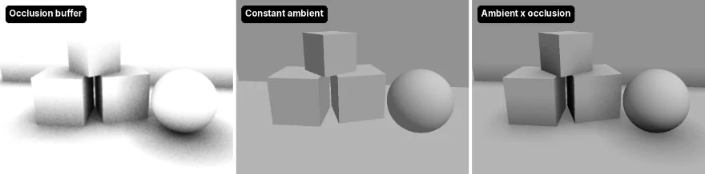

Advanced Lighting
SSAO#
Our ambient term is a constant, so corners, creases and the gaps between objects are as bright as open surfaces. In reality these places receive less indirect light, because nearby geometry blocks part of it. The effect is called ambient occlusion, and adding it gives a scene depth and contact that flat ambient light lacks.
Computing true occlusion requires tracing rays against the scene. Screen-space ambient occlusion (SSAO) approximates it using only what is already on screen: the depth buffer.
How it works#
For each pixel, take a number of sample points in a small hemisphere above the surface, oriented along the normal. For each sample, check the G-buffer: is there geometry in front of the sample point? The fraction of samples that are blocked is the pixel's occlusion.
SSAO fits naturally after a G-buffer pass. It needs positions and normals in view space, so either store them that way or transform them on read. Working in view space makes depth comparisons a matter of comparing z.
The sample kernel#
Generate 64 random points inside a unit hemisphere pointing along +z, in tangent space. Scale them so that more samples fall close to the origin, since nearby occluders matter most:
var kernel: [SIMD4<Float>] = (0..<64).map { i in
var sample = Float3(.random(in: -1...1), .random(in: -1...1), .random(in: 0...1))
sample = normalize(sample) * .random(in: 0...1)
let t = Float(i) / 64
let scale = 0.1 + 0.9 * t * t // cluster near the center
return SIMD4<Float>(sample * scale, 0)
}
Store the kernel in a buffer for the shader.
Random rotation#
64 samples per pixel is already a lot, and still not enough to avoid visible banding. Rotating the kernel differently at each pixel turns the banding into fine noise, which a blur then removes. A tiny 4 × 4 texture of random vectors, tiled across the screen, supplies the rotations:
let noise: [SIMD4<Float>] = (0..<16).map { _ in
SIMD4<Float>(.random(in: -1...1), .random(in: -1...1), 0, 0)
}
let descriptor = MTLTextureDescriptor.texture2DDescriptor(
pixelFormat: .rgba32Float, width: 4, height: 4, mipmapped: false)
noiseTexture = device.makeTexture(descriptor: descriptor)!
noiseTexture.replace(region: MTLRegionMake2D(0, 0, 4, 4), mipmapLevel: 0,
withBytes: noise, bytesPerRow: 4 * MemoryLayout<SIMD4<Float>>.stride)
The SSAO shader#
The output is a single-channel texture (.r8Unorm) holding the occlusion factor.
struct SSAOUniforms {
float4x4 projection;
float radius;
float bias;
};
fragment float fragment_ssao(ScreenOut in [[stage_in]],
constant SSAOUniforms &uniforms [[buffer(0)]],
constant float4 *kernel [[buffer(1)]],
texture2d<float> positionTexture [[texture(0)]],
texture2d<float> normalTexture [[texture(1)]],
texture2d<float> noiseTexture [[texture(2)]]) {
constexpr sampler clampSampler(filter::nearest, address::clamp_to_edge);
uint2 pixel = uint2(in.position.xy);
float3 position = positionTexture.read(pixel).xyz; // view space
float3 normal = normalize(normalTexture.read(pixel).xyz);
float3 random = noiseTexture.read(pixel % 4).xyz;
// A TBN basis that orients the hemisphere along the normal, rotated randomly.
float3 tangent = normalize(random - normal * dot(random, normal));
float3 bitangent = cross(normal, tangent);
float3x3 TBN = float3x3(tangent, bitangent, normal);
float occlusion = 0.0;
for (int i = 0; i < 64; i++) {
float3 samplePosition = position + TBN * kernel[i].xyz * uniforms.radius;
// Project the sample to find its pixel.
float4 clip = uniforms.projection * float4(samplePosition, 1.0);
float2 uv = (clip.xy / clip.w) * float2(0.5, -0.5) + 0.5;
float sceneZ = positionTexture.sample(clampSampler, uv).z;
// Ignore occluders far outside the sampling radius.
float rangeCheck = smoothstep(0.0, 1.0, uniforms.radius / abs(position.z - sceneZ));
occlusion += (sceneZ >= samplePosition.z + uniforms.bias ? 1.0 : 0.0) * rangeCheck;
}
return 1.0 - occlusion / 64.0;
}
Points worth noting:
- In our right-handed view space the camera looks down -z, so a larger z is closer to the camera. A sample is occluded when the scene's surface at that pixel is closer than the sample.
- The
bias, around 0.025, prevents a flat surface from occluding itself. - The range check stops a distant background object from darkening the edge of something in front of it.
- Reading
pixel % 4tiles the noise texture across the screen without a sampler. - The projection to texture coordinates flips y, as it did for shadow maps.
A radius of about 0.5 world units is a good starting point.
Blur#
The raw result has a visible 4 × 4 noise pattern. A box blur of the same size removes it exactly:
fragment float fragment_ssaoBlur(ScreenOut in [[stage_in]],
texture2d<float> ssao [[texture(0)]]) {
int2 pixel = int2(in.position.xy);
int2 size = int2(ssao.get_width(), ssao.get_height());
float result = 0.0;
for (int x = -2; x < 2; x++) {
for (int y = -2; y < 2; y++) {
int2 p = clamp(pixel + int2(x, y), int2(0), size - 1);
result += ssao.read(uint2(p)).r;
}
}
return result / 16.0;
}
Applying it#
Ambient occlusion affects ambient light only. In the deferred lighting pass:
float ao = ssaoTexture.read(pixel).r;
float3 ambient = albedo * 0.3 * ao;
Multiplying the whole lit result by the occlusion is a common mistake. It darkens directly lit surfaces, which looks dirty.

Tuning and cost#
- Render SSAO at half resolution. It is low-frequency information, and the blur hides the difference.
- 16 to 32 samples are often enough with a good blur.
- Raising the result to a power (
pow(ao, 2.0)) increases contrast.
SSAO only knows about visible surfaces, so occlusion can appear or vanish as objects enter and leave the screen. Refinements such as HBAO and GTAO improve accuracy, and ray tracing computes real ambient occlusion on hardware that supports it.
Exercises#
- Output the raw and blurred occlusion to the screen.
- Vary the radius and the sample count and find the cheapest setting that still looks good.